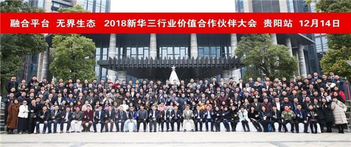
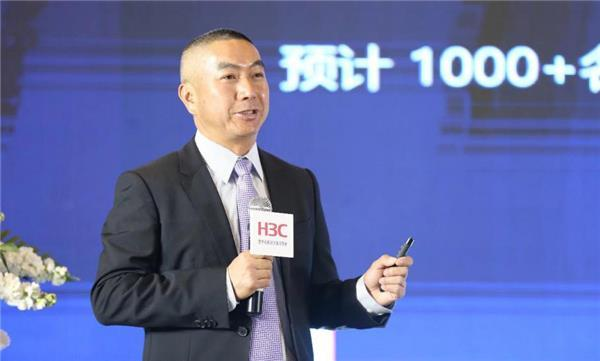
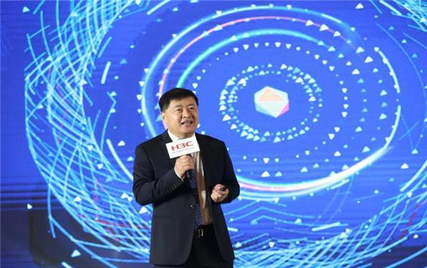

12月14日，作为本年度行业价值合作伙伴大会的收官之站，新华三向与会300多家核心合作伙伴分享技术战略和生态战略，并为合作伙伴颁发了销售贡献奖，解决方案拓展奖和合作贡献奖共计160个奖项，以表彰合作伙伴为新华三生态体系建设做出的巨大贡献。
数字化转型硕果累累 无界生态拨云见日
自融合平台 无界生态战略发布以来，基于技术，营销，运营，服务与人才五大平台，新华三携手广大合作伙伴聚焦融合价值，获得丰硕成果。
新华三集团副总裁、渠道销售与管理部总经理黄辉华先生全面解读了无界生态战略落地的成果，累计覆盖近1万名合作伙伴的众多赋能项目，从高层管理人员，技术骨干和销售精英，到面向在校学生的数字化人才力量储备，一系列创新让新华三和合作伙伴在无界生态体系中都得以实现价值最大化，融合共赢。
2018年新华三更加注重赋能平台的打造，新华三方舟上线8个月注册用户突破万名，已经成为合作伙伴在日常工作中不可或缺的实用工具。而CPG渠道资料中心的上线，针对合作伙伴定制开发，实现精准的一站式产品配置和投标资料获取，全面提升合作伙伴的日常工作效率。
携手共建 展望数字化生态发展
新华三集团副总裁、技术战略部总裁李立先生重点分享了在政务，医疗，智能制造，互联网，金融等领域与合作伙伴联合打造的聚集技术创新，结合应用需求的场景化方案和实践案例。
在IT基础架构、云计算、大数据、安全每个领域有不同的生态发展策略，而数字化实验室的建立则为新华三和合作伙伴的联合解决方案市场落地提供更多可能性，在2018年，已与40多家合作伙伴完成60余个数字化解决方案的测试认证，包括兼容性测试认证、联合方案测试认证和第三方平台调用有效性测试认证。
在贵阳站的活动上、作为合作伙伴代表，北京神州新桥，上海凯畅信息，江西慧通力合各自分享了与新华三携手完成的数字化转型实践，通过丰富的案例展示了无界生态共建共享的丰硕成果。
在为期两个月的活动中，共有1000余家合作伙伴参与，17家合作伙伴分享了与新华三合作的成功案例，同时共颁发销售贡献奖，解决方案拓展奖和合作贡献奖共计435个，以激励合作伙伴与新华三继续携手共进，面对更大的市场机遇再创佳绩。
作为数字化解决方案领导者，新华三将持续深化无界生态体系的构建，助力合作伙伴抓住数字化转型的市场发展机遇，不断提升核心竞争力，携手助力百行百业的数字化转型，为我国数字经济的腾飞发展提供智慧助力。